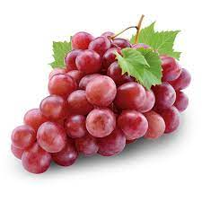
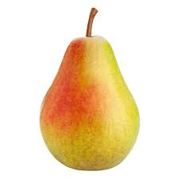

תַּפּוּחַ תַּרְבּוּתִי (מכונה גם תפוח-עץ או בקיצור תפוח, שם מדעי: Malus domestica)
הוא מין של עץ פרי נשיר במשפחת הוורדיים.
מקורו של התפוח התרבותי במין הבר Malus sieversii, המגיע ממרכז אסיה וגדל גם כיום בהרים בדרום קזחסטן,
בקירגיזסטן, בטג'יקיסטן ובמחוז שינג'יאנג בסין. מינים אחרים שככל הנראה קשורים בהתפתחות התפוח התרבותי הם Malus
baccata ו-Malus sylvestris. מיני תפוח נוספים משמשים כיום בניסיונות לפתח זני תפוחים שיהיו מסוגלים לגדול בתנאי
אקלים שונים.
התפוח הוא מרכיב מרכזי בתפריט באזורים רבים שבהם שורר אקלים קר והוא ככל הנראה אחד העצים הראשונים שבויתו על ידי
האדם.
מחיר לקילו: 13 ש"ח

העינב הוא פרי גפן היין. זהו ענבה, פרי לא קלימקטרי בעל זג (קליפה) דק ועשיר בצבענים
וציפה מימית, שבתוכה 4-0
חרצנים. צבע העינב משתנה בתלות זן הגפן ויכול להיות סגול, אדום, ורוד או ירוק. לענבים צורה אליפטית. קיימים מאות
זני ענבים, הנחלקים באופן מסורתי לענבי יין - המיועדים לייצור יין וגראפה, ענבי שולחן - המיועדים לאכילה כמות
שהם, וענבי שולחן ויין - המתאימים לשני הייעודים. בנוסף, ניתן לצרוך ענבים בצורת צימוקים, ריבה, ג'לי, חומץ,
תמצית זרעי ענבים, שמן זרעי ענבים, צ'ורצ'חלה (ממתק גרוזיני מסורתי) או דבשה. גם לחרצנים שימוש חשוב לתעשיית שמן
מזרעי ענבים המשמש לבישול, לעיסוי ולרפואה. הליך קטיף הענבים נקרא בציר.
מחיר לקילו: 14 ש"ח

אַגָּס (שם מדעי: Pyrus) הוא סוג במשפחת הוורדיים שמקורו באזור איראן ובו 25 מיני עצים, חלקם מניבים פרי טוב
למאכל אדם.
עונת פריחת האגס היא האביב – בה פורח פרח צחור בעל ריח מתקתק. המאביקים הם חרקים אוספי אבקה וצוף, לרוב דבורים,
הנמשכות לצבעם הבוהק של הפרחים ולריחם. מועדי הבשלת הפרי – מן הקיץ עד הסתיו המאוחר. פרי האגס דמוי-תפוח והוא
מכונה פרי מדומה מכיוון שהחלק הנאכל בו הוא מצעית הפרח, ולא רק השחלה המופרית.
בישראל גדל בר מין אחד של אגס - המין אגס סורי, הגדל באזור החורש הים-תיכוני. מטעים מסחריים של אגס תרבותי
נפוצים מאוד בישראל.
מחיר לקילו: 15 ש"ח